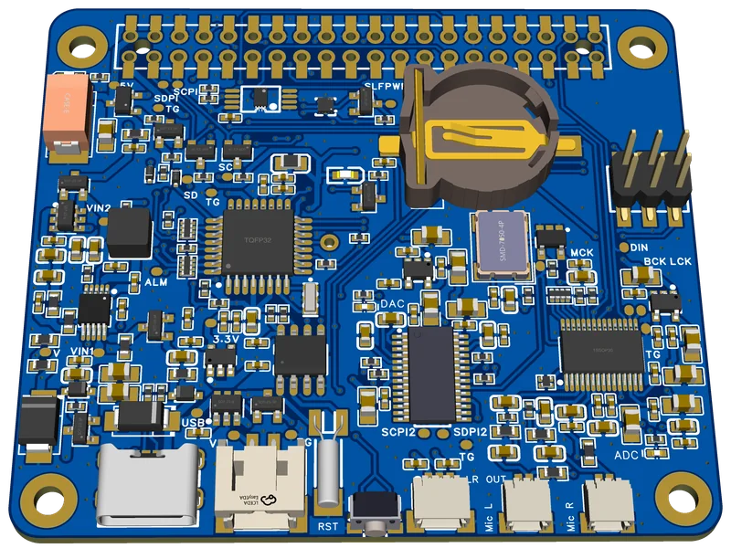
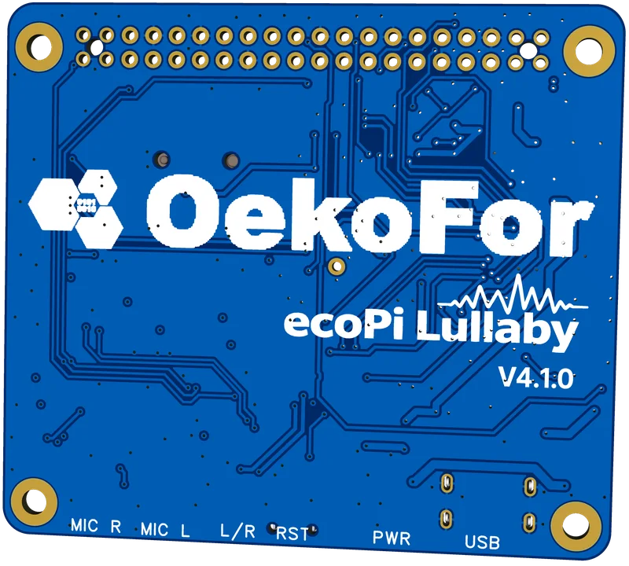
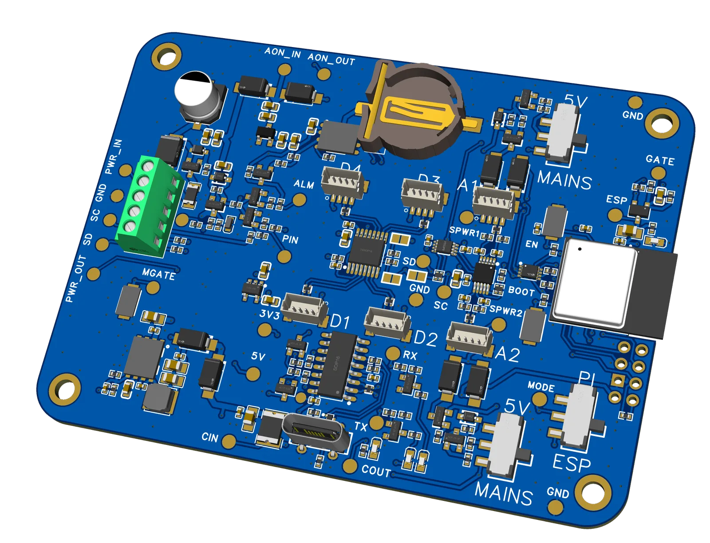
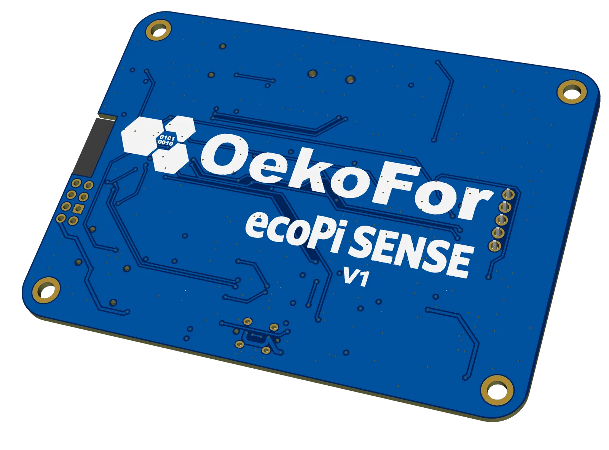

The monitoring problem
Short field surveys capture only a limited window of ecological activity. Passive acoustic monitoring can extend observations across seasons and times of day, but it also creates practical challenges: reliable remote hardware, large volumes of audio and detections that still need transparent review.
The useful unit is therefore not just a recorder. It is the complete path from dependable field capture to data that an ecological team can inspect and interpret.
The system
ecoPi combines solar-powered recording hardware, on-device BirdNET detection and a browser-based ecological interface. Field units capture environmental sound and run automated species recognition directly on embedded hardware, with detections and requested audio available through tools used to explore, review and validate the monitoring output.
An internet connection enables real-time data exchange during monitoring — audio can be requested and detections verified while devices are in the field. Recording times, duration and the AI model can be reconfigured during the field season to adapt to changing survey needs.
The platform is modular: acoustic monitoring can be paired with environmental sensing so temperature, humidity and other site conditions can be considered alongside species detections.
My contribution
I contribute across ecoPi hardware and software. My software work includes R Shiny ecological applications, dashboards, maps, detection-review tools, environmental sensor interfaces, APIs, data pipelines, performance improvements and device-status monitoring.
On the hardware side, I contribute to field testing and development. This includes ecoPi Lullaby, a custom Raspberry Pi HAT that combines low-power management with an audio interface, and ecoPi Sense, a module for collecting environmental data alongside acoustic monitoring.
Monitoring software
ecoPi Lullaby hardware


3D model — ecoPi Lullaby
Drag to rotate · scroll to zoom
ecoPi Sense hardware


Tools and technologies
Current status
ecoPi is an active OekoFor monitoring platform under continued hardware and software development. My current work focuses on ecological applications and interfaces, data handling, device visibility and improvements to field hardware.
This page describes my contribution to the wider system. It does not claim sole authorship of ecoPi or present ongoing modules as finished products.


.webp){kind=link}